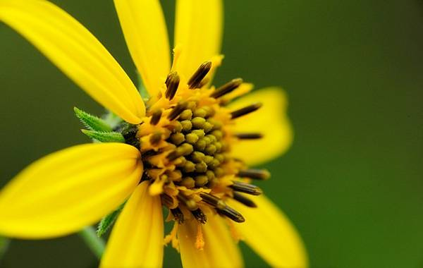

2. 'Клюв попугая'
Клюв попугая считают исчезнувшим цветком, родина которого — Канарские острова. Опыляли цветок насекомые нектарници, которые давно вымерли.

Особенности
- Место - Канарские острова
- Исчезнувший цветкок
Этих цветов не приобрести в цветочных магазинах , не сорвать на клумбе возле дома и не увидеть в горшке на окне соседа.
Очень редкий цветок. Встречается в провинции Пьемонт в Северной и Южной Каролине. Этого желтого красавца зачислили к исчезающим видам 7 мая 1991 года.
Клюв попугая считают исчезнувшим цветком, родина которого — Канарские острова. Опыляли цветок насекомые нектарници, которые давно вымерли.
Цветок-загадка, надежно скрывающийся от человеческих глаз. Встретить его Ты сможешь только в темных лесах Британии и США. Исследователи часто тратят целые недели, а то и месяцы на поиски этой удивительной красавицы.

Топ 3 самых красивых города

Топ 3 самых быстрых животных в мире

Топ 3 самых быстрых машин 2023 года